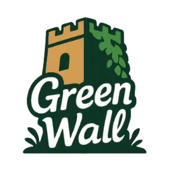
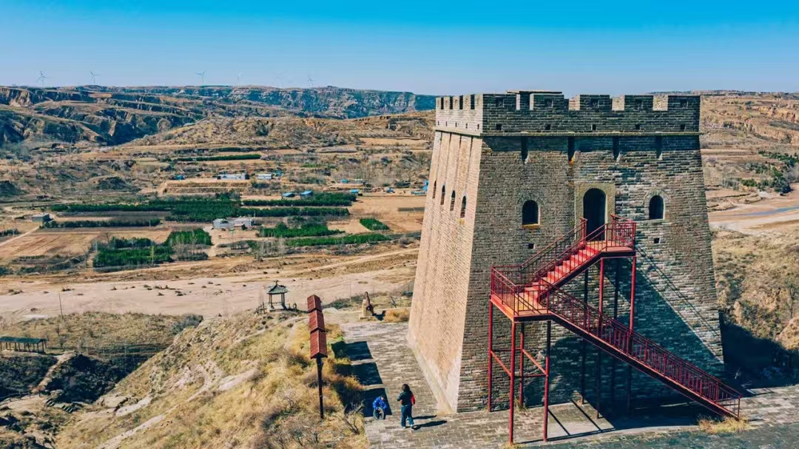

HOME / Site journal
Let every watchtower
FUGU GREAT WALL GUARDIAN
Let every watchtower
be remembered.
Explore, document, and create —
keep the stories of the Fugu Great Wall alive.

DiscoverExploreShare
The wall endures among the loess hills.Fugu · Yellow River frontier
Photo: Great Wall National Cultural Park
WALK & REMEMBER
Leave a footprint worth remembering
Start with one watchtower. Record what you see and help care for it.
Fugu Great WallHeritage sites 10My recorded sites
Demo coordinates. Verify locations before visiting.
Latest record
View allREAD THE LANDSCAPE
Discover the story of a watchtower
Explore the sites, their stories, and ways to care for the frontier.
MAKE A LITTLE MEMORY
Turn a Great Wall memory into a gift
Choose a site or add your photos to design a personal keepsake.
Your design
Made to rememberRecent designs
View all →OUR SHARED WALL
Our shared Great Wall
Discover the photos and keepsakes that visitors have chosen to share.
MY GUARDIAN JOURNAL
Your Great Wall journal
Keep visits, patrols, observations, and designs. You choose what to share.
LOOK A LITTLE CLOSER
Give overlooked sites a closer look
Use gaps in documentation and patrols to plan your next observation.